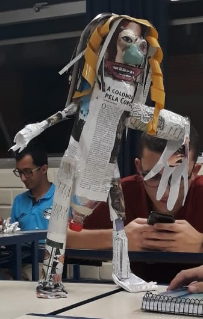
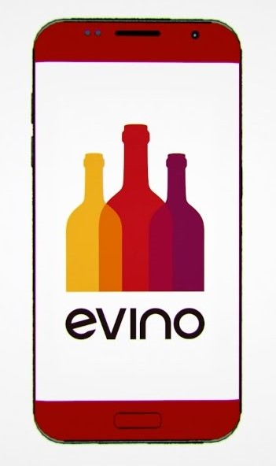
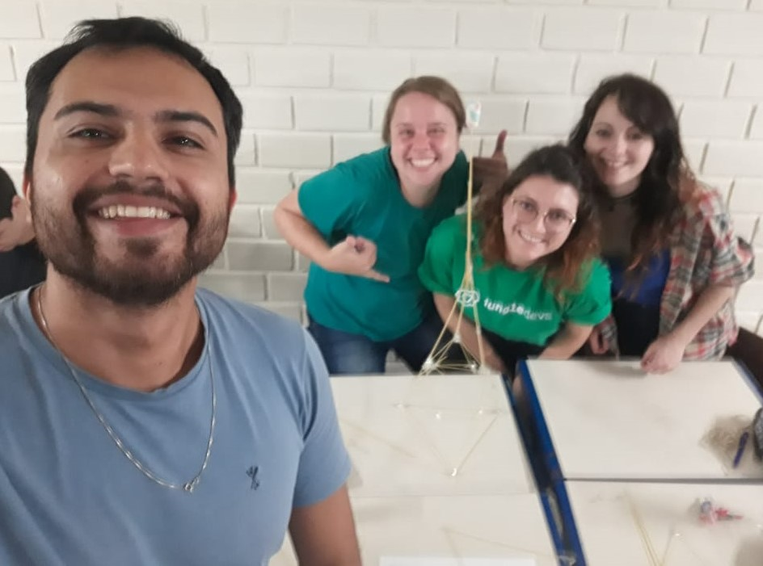
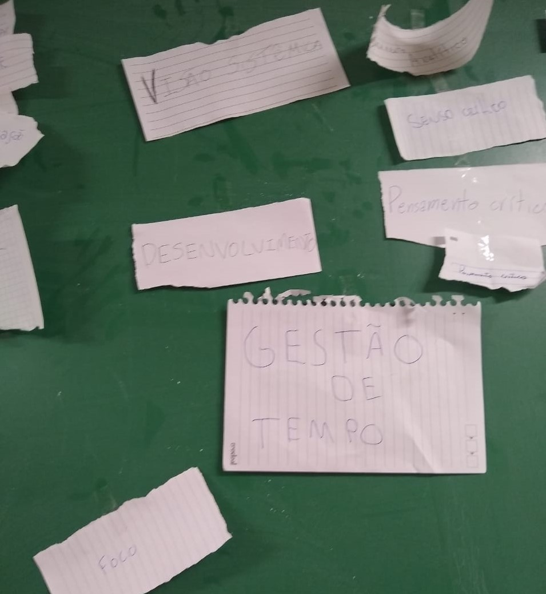

-
Conceitos de: criatividade, desenvolvimento, protótipo, piloto e inovação. -
Importância da equipe para a criatividade e inovação?  -
Fatores distintivos do modelo de negócio da Evino  -
Importância do planejamento e do trabalho em equipe  -
Competências técnicas e socioemocionais distintivas para a área de TI requeridas pelo mercado de trabalho.  -
Café compartilhado e definir características distintivas para a nossa profissão requeridas pelo mercado de trabalho -
Técnica 5w2h 
-
Desenvolvimento do plano de ação pela técnica 5W2H para agregação de valores distintivos ao currículo 
-
A cidade educadora, inteligente e criativa. -
Criando um produto inovador para apoiar a solução de um problema da população 
-
Associação / Analogias -
Carteirinha de vacinação digital.